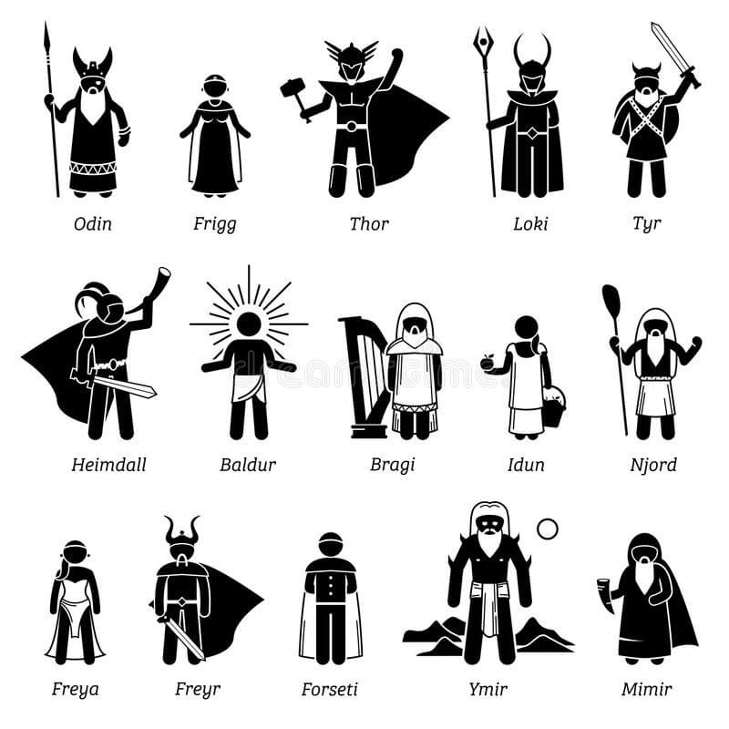
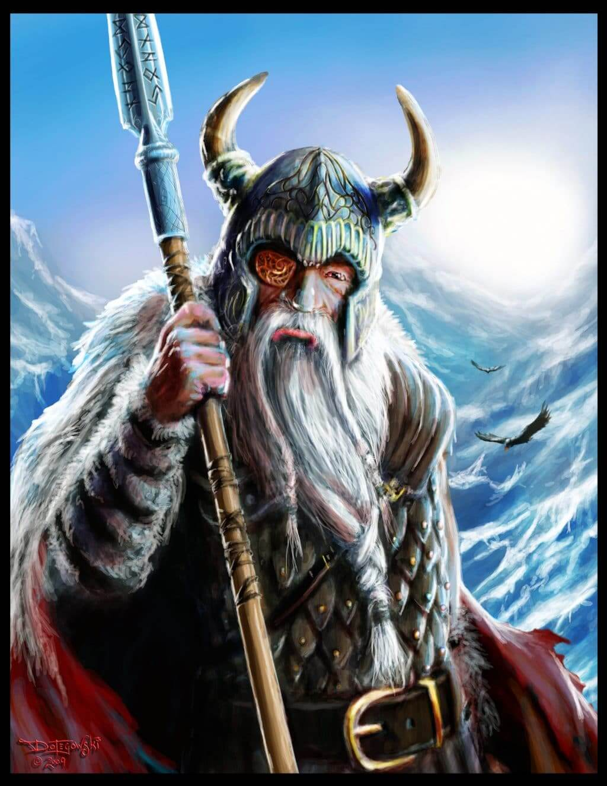
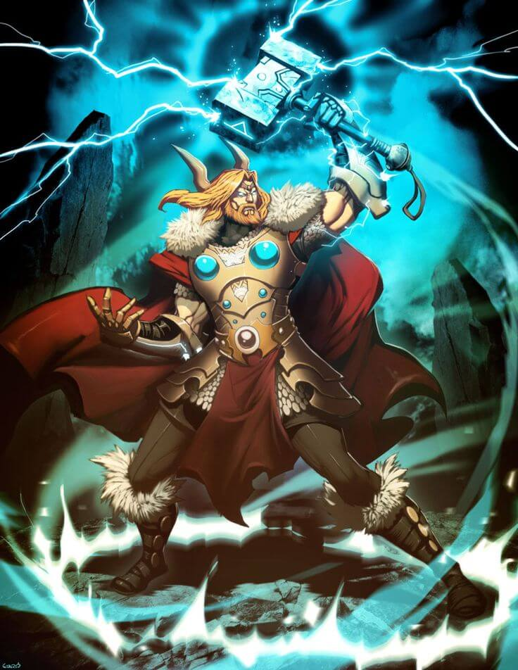
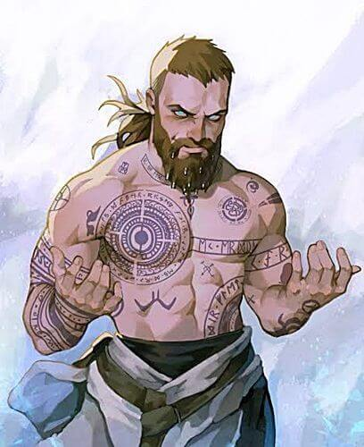
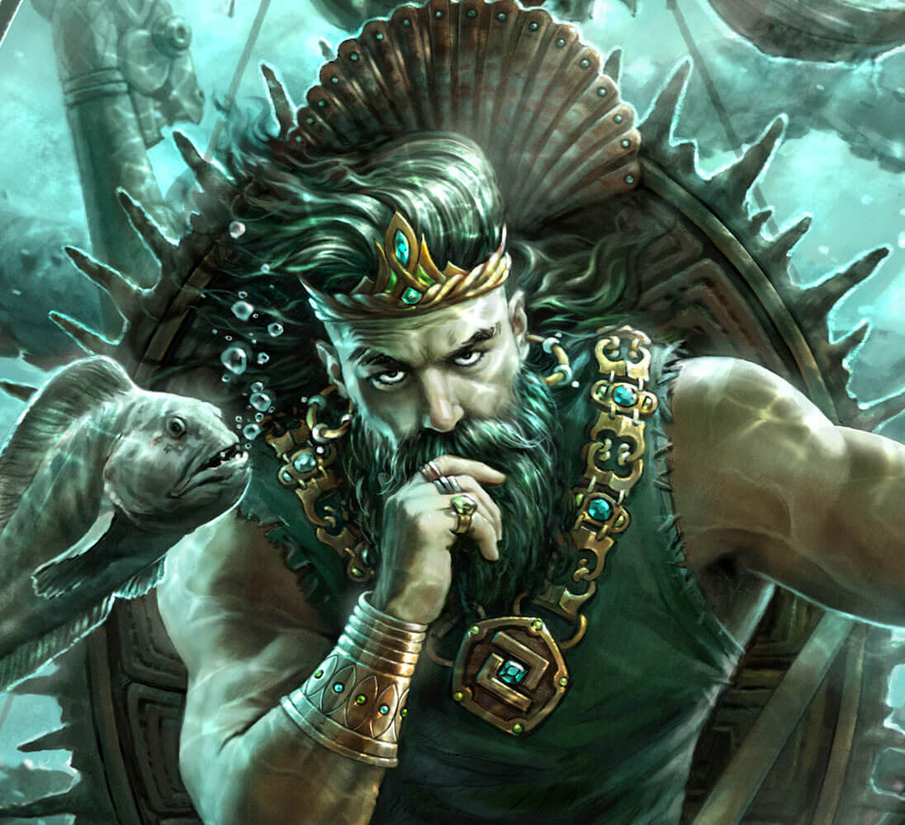
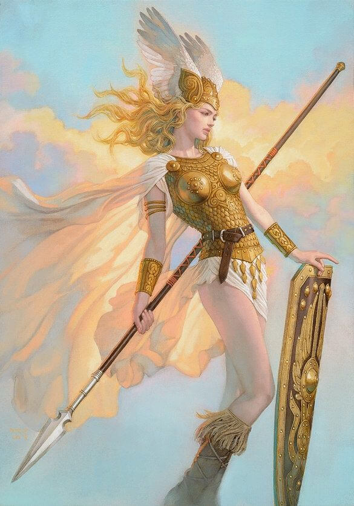

Los vikingos creían en varios dioses, divididos en dos ramas: los Aesir y los Vanir. Añadieron a sus creencias algunas criaturas míticas como el gigantesco lobo Fenrir, los gigantes y la serpiente del mundo Jörmungandr.
Los principales dioses de la mitología nórdica son:
| Nombre | Descripción | Imagen |
|---|---|---|
| Odín | Odín es el dios principal de la mitología nórdica, asociado con la sabiduría, la guerra y la muerte. Es conocido por sacrificar su ojo en el Pozo de Mimir para obtener conocimiento y por colgarse del árbol Yggdrasil para descubrir las runas. Es el padre de varios dioses, incluyendo a Thor y Balder, y reside en Asgard, desde donde observa los nueve mundos.
Más información sobre Odín |
 |
| Thor | Thor es el dios del trueno, el cielo y la agricultura. Hijo de Odín y Jord, es conocido por su fuerza y por portar el martillo Mjölnir, que utiliza para proteger a los dioses y a la humanidad de los gigantes. Es una de las deidades más veneradas en la mitología nórdica.
Más información sobre Thor |
 |
| Balder | Balder es el dios de la luz, la pureza y la belleza. Hijo de Odín y Frigg, es amado por todos los dioses. Su muerte, causada por una flecha de muérdago, es uno de los eventos más trágicos en la mitología nórdica y se considera un presagio del Ragnarök.
Más información sobre Balder |
 |
| Njord | Njord es un dios Vanir asociado con el mar, la navegación y la fertilidad. Padre de Frey y Freya, es venerado por los marineros y pescadores. Su residencia es Nóatún, un lugar junto al mar. Tras la guerra entre los Æsir y los Vanir, Njord fue enviado a Asgard como parte del acuerdo de paz.
Más información sobre Njord |
 |
| Freya | Freya es la diosa del amor, la belleza y la fertilidad. Hermana de Frey e hija de Njord, también es asociada con la guerra y la muerte, ya que recibe a la mitad de los guerreros caídos en su salón, Fólkvangr. Es una de las diosas más prominentes y veneradas en la mitología nórdica.
Más información sobre Freya |
 |
© 2025 Mitología Nórdica | Todos los derechos reservados